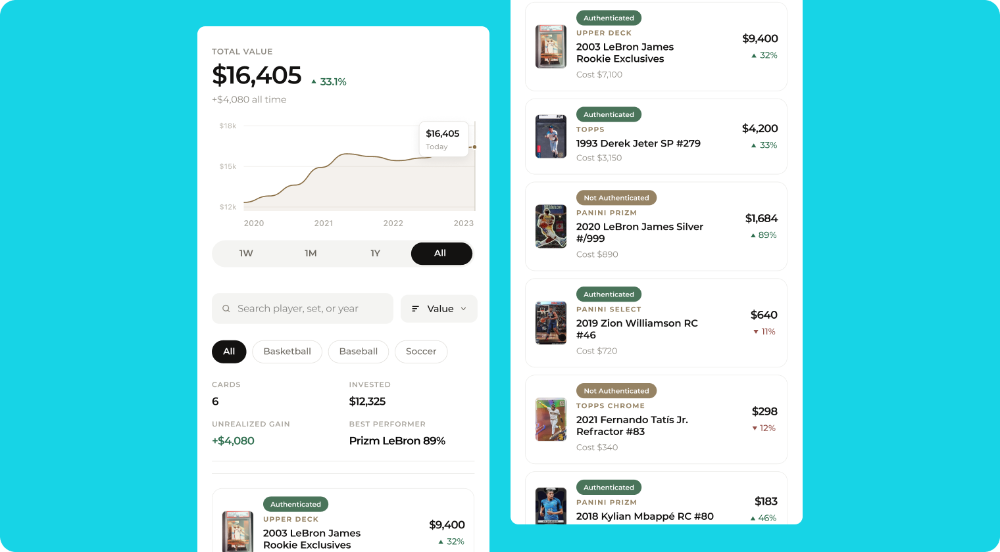
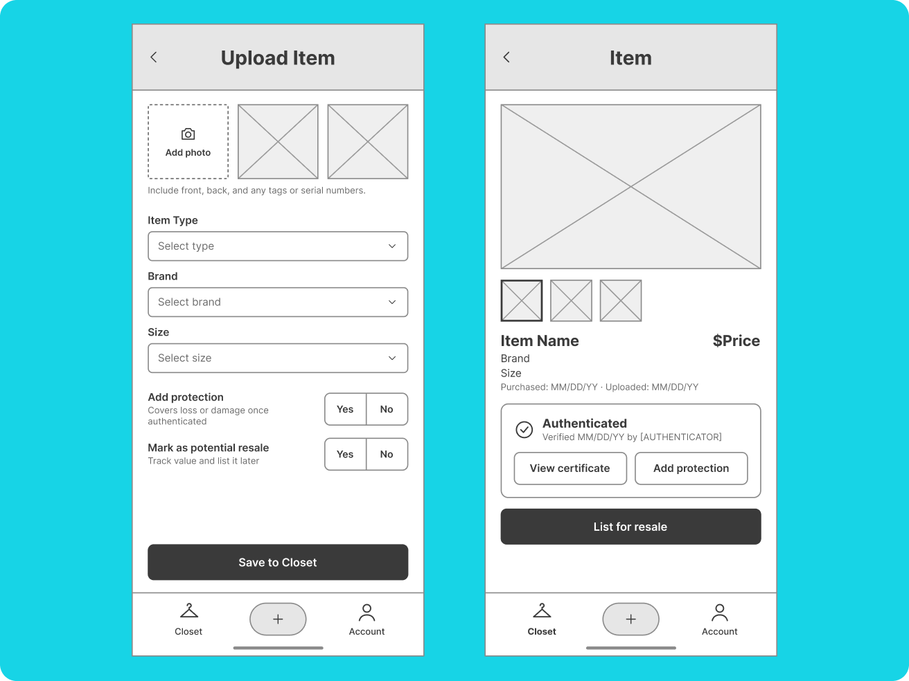
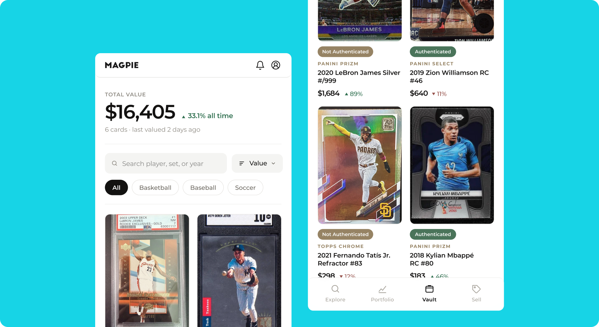

User Interviews and Usability Testing That Changed What We Built
Freelance design lead pre-product-market-fit, co-leading user interviews and task-based usability sessions that reversed the product's founding bet before it shipped.

The Situation
I joined as freelance design lead during Entrepreneurs Roundtable Accelerator, working alongside the founder and a product manager, with a freelance designer of my own supporting the work. The company was pre-product-market-fit, and my job was to help take it from an early hypothesis to a shipped beta.
The Hypothesis
The company began as a fraud-prevention tool. By early 2021 it authenticated high-value collectibles for buyers and sellers worried about fakes, using forensic photo and video analysis. The bet was that trust in authenticity was the product.

Wireframes for the original authentication product: uploading an item and viewing its authenticated status.
How We Tested It
The PM and I ran about six user interviews together, and I helped lead the synthesis. We also put the real MVP in front of beta users and had them try to complete a task in it, so we could watch what actually happened instead of asking what people thought they wanted.
The Add Item prototype: find the item, then add what you paid and when.
What We Found
Collectors didn't just worry about fakes. They had no reliable way to track what they owned or what it was worth, scattered across emails, spreadsheets, and marketplaces.
- Time and effort to track and value collections spread across multiple categories
- Cost and friction involved in buying, selling, and trading
- Limited places to connect with other collectors and actually enjoy the hobby
We were building the right feature for the wrong problem.
In these other platforms you can never track price fluctuations… the changes I want to know.
An early Magpie userMy main reason for starting an Instagram page for my collection was so I could enjoy items that aren't regularly displayed or in storage.
An early Magpie userThe Decision It Changed
The company repositioned around the bigger problem and relaunched as Magpie, a platform for tracking and valuing a collection, with the authentication work folded in underneath as a trust layer instead of being the whole product.
What I Designed
Research pointed toward a bigger opportunity, so I translated those three challenges directly into what shipped:
- Value: portfolio-style tracking so a collector could see what their whole collection was worth at a glance, not just one item at a time
- Trade: a lower-friction path to buy, sell, and trade within the platform
- Discover & Share: a way for collectors to connect with each other, closer to a community than a marketplace

Magpie Vault on mobile: collection value and the card list with authentication status
Evidence It Worked
One collector's experience captured why the authentication layer mattered even after the pivot. He used Magpie to catalog and share a collection of over a thousand items, and the platform's audit process caught that one of his graded cards had been decertified after counterfeiters copied it. He was able to resolve it quickly.
Outcome
Magpie shipped with integrations into eBay, Shopify, and other marketplaces collectors already used, with another 213 collectors already in the pipeline heading into 2022. The company was acquired about a year after I left.
Magpie was a SaaS business from the start: subscription revenue for the collection-management tools, plus commission on B2B partnerships.
By the time I left, that same partnership had also surfaced a signal toward the business side of the hobby, collector-dealers who needed more than a personal tracker.
The portfolio-tracking view I'd already designed, total value, performance over time, gain and loss per holding, became the foundation for that direction: the company moved toward the same mechanic for wealth management, reporting on a client's full balance sheet of alternative assets instead of one collector's cards.
What I'd Do Differently
Even after the repositioning, we kept testing across several collectible categories. An ongoing partnership with a small trading card shop in New York, a business whose own buying and reselling depended on getting pricing and authentication right, narrowed it to trading cards specifically, the category the authentication work had started in.